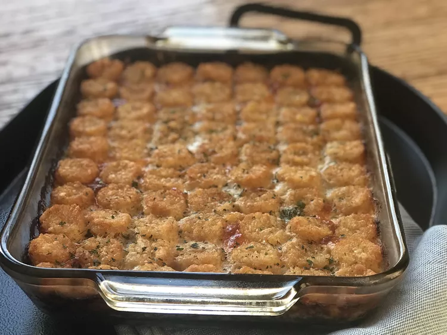

Lasagna

Descripcion
Esta es una receta para preparar una deliciosa lasagna con la cual podras deleitar a tus familiares
La lasagna que prepares puede contener pollo o carne, tambiem puede ser vegana
Ingredientes
- 1 pound ground beef
- 1 onion, chopped
- 1 (10.75 ounce) can condensed cream of mushroom soup
- ¾ cup sour cream
- 1 (15 ounce) can green beans, drained and liquid reserved, divided
- 1 (8 ounce) package processed cheese (such as Velveeta®), sliced
- 1 pound frozen bite-sized potato nuggets (such as Tater Tots®)
Pasos
- Preheat the oven to 375 degrees F (190 degrees C).
- Heat a large skillet over medium-high heat. Cook and stir ground beef in the hot skillet until browned and crumbly, 5 to 7 minutes. Drain grease. Add onion and cook until soft and translucent, about 5 minutes.
- Meanwhile, combine condensed soup, sour cream, and green bean liquid in a small bowl. Set sauce aside.
- Add green beans to the cooked beef and onions; mix to combine and transfer to a casserole dish. Top with sliced cheese and cover with frozen potato nuggets. Pour sauce over top.
- Bake in the preheated oven potatoes are browned and sauce is bubbly, about 1 hour.